A commutative ring  with
with
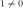
is an integral domain if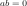
implies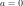
or . It is a field if every
non-zero element is a unit.
. It is a field if every
non-zero element is a unit.
Every field is an integral domain, and every finite integral domain is a field.
If in a field with  , multiplying by
, multiplying by
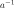
gives. Let now be a finite domain and . The
map 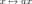
is injective, since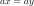
gives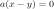
and hence ; an injective map of a finite set to
itself is surjective, so
; an injective map of a finite set to
itself is surjective, so 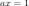
for some .
.
A commutative ring with is a field if and only if its
only ideals are  and .
and .
Let be a field and  an ideal, say
an ideal, say
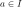
with. Then 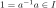
, so for every and
and 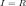
. Conversely, if the only ideals are the trivial ones and, the principal ideal 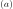
is not, hence equals , so 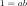
for some .
.
Let be commutative. A proper ideal
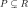
is prime if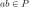
implies or
or 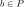
; a proper ideal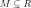
is maximal if no ideal lies strictly between and .
and .
A proper ideal  of a commutative ring is prime if and only if
of a commutative ring is prime if and only if
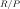
is an integral domain.is commutative with
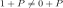
exactly when is
proper. Now 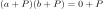
means , and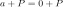
means. So "no zero divisors in "
is literally the statement that implies or
.
A proper ideal of a commutative ring is maximal if and only
if
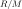
is a field.The ideals of are exactly the
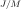
for ideals with
with
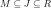
: the preimage under of an ideal of
is such a , and
of an ideal of
is such a , and 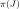
recovers it, since is
surjective and 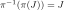
when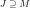
. So has only the two trivial ideals precisely when there is no ideal strictly between and ; by the previous proposition that is
exactly when is a field.
Every maximal ideal of a commutative ring is prime.
If is maximal then is a field, hence an integral domain,
hence is prime.
Every commutative ring with has a maximal ideal; more generally every proper ideal is contained in one.
Let  be a proper ideal and order by inclusion the set of
proper ideals containing ; it is non-empty, containing . Let
be a proper ideal and order by inclusion the set of
proper ideals containing ; it is non-empty, containing . Let
 be a chain in and
be a chain in and  the union of its members.
is an ideal: two elements of lie in a common member of the
chain, so their difference lies in , and absorption is inherited.
is proper, because
the union of its members.
is an ideal: two elements of lie in a common member of the
chain, so their difference lies in , and absorption is inherited.
is proper, because
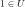
would put in some member of
the chain, which is proper. So
in some member of
the chain, which is proper. So 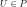
is an upper bound, and Zorn's lemma gives a maximal element of – an ideal maximal among the
proper ideals containing , which is maximal outright since any
ideal strictly containing it is proper or all of .
" would put in some member of the chain" is the whole
reason the proof works, and the reason ideals are required to be proper:
properness is a finitary condition, so it survives unions of chains.
The same argument proves that every vector space has a basis and that
every finitely satisfiable set of formulas has a maximal such extension
– three instances of one Zorn argument.